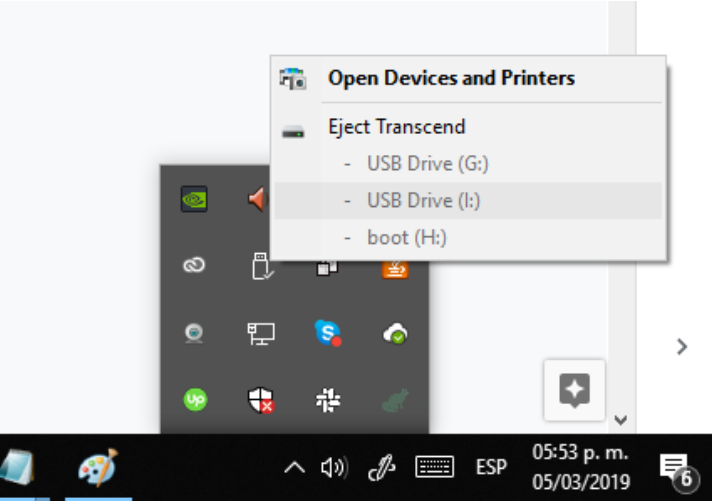

La connexion par Wifi demande plusieurs étapes, et peut nécessiter une intervention d'un administrateur du réserau. C'est cependant celle que nous recommendons lorsqu'elle est possible, car cela fait du Raspberry Pi un véritable objet connecté, indépendant de l'ordinateur utilisé pour le programmer.
Si vous ne disposez pas d'un réseau sans fil, mais d'un réseau câblé en ethernet, vous pouvez créer un point d'accès sans fil, avec un appareil dédié, par exemple le point d'accès bon marché TL-MR3020, que nous avons validé pour cet usage.

Branchez ce boîtier à une source de courant, placez le bouton sélecteur sur la position AP et connectez-le à votre réseau avec le câble fourni.
Un réseau wifi sera créé, dont le nom (SSID) et le mot de passe (KEY) sont imprimés sur le côté du boîtier, ou fournis dans la documentation de celui-ci.
Avant de pouvoir configurer le Raspberry Pi, vous devez obtenir les informations suivantes sur votre réseau Wifi.
Il s'agit du nom du réseau. Il peut généralement se trouver en listant les réseaux Wifi disponibles, depuis un téléphone portable ou ordinateur capable de se connecter en Wifi.
Si vous parvenez à vous connecter au réseau depuis un téléphone portable, c'est que les adresses IP sont attribuées en DHCP, c'est à dire automatiquement. Les adresses IP sont dites "dynamiques".
Si vous n'y parvenez pas, c'est que l'accès est restreint à certaines adresses IP voire à certains appareils, via leur adresse MAC. L'administrateur système doit alors attribuer une adresse IP au Raspberry PI, et/ou autoriser l'accès à son adresse MAC.
TODO: procedure pour obtenir l'adresse MAC (en préparation)
Si les adresses IP sont statiques, vous devrez obtenir de l'administrateur une adresse IP attribuée au Raspberry Pi, l'adresse IP de la passerelle (gateway), et l'adresse IP du DNS à utiliser.
Une fois que vous avez obtenu toutes les informations, vous pouvez passer à la suite. S'il vous en manque, utilisez le mode de connexion USB ou Bluetooth en attendant.
Suivez la procédure d'ouverture du fichier de configuration quickpi.txt.
Mettez le SSID de votre réseau juste apès "SSID=". Par exemple s'il s'agit de "MonReseau", la ligne doit devenir :
SSID=MonReseau
Mettez le mot de passe de votre réseau juste après "PASSWORD=". Par exemple s'il s'agit de "MonMotDePasse", la ligne doit devenir :
PASSWORD=MonMotDePasse
Après "STATICNETWORK=", mettez un 0 si les adresses IP sur ce réseau sont attribuées dynamiquement, et un 0 sinon.
Indiquez l'adresse IP attribuée au Raspberry Pi après "STATICIPADDR=".
Indiquez l'adresse IP de la passerelle (Gateway) après "STATICGATEWAY=".
Indiquez l'adresse IP du DNS après "STATICDNS=".
Attribuez un nom à chacun des Raspberry que vous utiliserez sur le même réseau. Utilisez des lettres minuscules non accentuées et des chiffres, mais pas d'espaces. Une fois un nom choisi, collez une étiquette avec ce nom sur le Raspberry.
Renseignez ce nom après "NAME=" dans la configuration.
Attribuer un nom à votre établissement, qui sera commun à tous les Raspberry Pi que vous connecterez sur le même réseau. Utilisez des lettres minuscules non accentuées et des chiffres, mais pas d'espaces. Vous pouvez aussi l'ajouter sur l'étiquette.
Renseignez ce nom après "SCHOOL=" dans la configuration.
Après avoir modifié le fichier de configuration, enregistrez le, et éjectez proprement la carte micro-sd de votre ordinateur (comme avant d'éjecter une clé USB).
Replacez alors la carte SD dans le Raspberry PI alors qu'il est éteint
Allumez le Raspberry, et attendez une petite minute pour être sûr qu'il a bien démarré.
Chargez alors l'interface de QuickPi, puis cliquez sur le bouton "Connecter".

Sélectionnez l'onglet Wifi dans la fenêtre qui s'ouvre.

Dans le premier champ de saisie, entrez le nom choisi pour votre établissement.
Cliquez alors sur "GET LIST", pour charger la liste des noms de Raspberry Pi connus pour cet établissement.
Sélectionnez le nom de votre Raspberry. Son adresse IP apparaît alors.
Cliquez alors sur "Connecter l'appareil". Après quelques instants, le bouton "Connecter" de l'interface se réduit et un bouton "Installer" apparaît.,

Cela signifie que le Raspberry Pi est bien connecté, et que vous pouvez interagir avec.